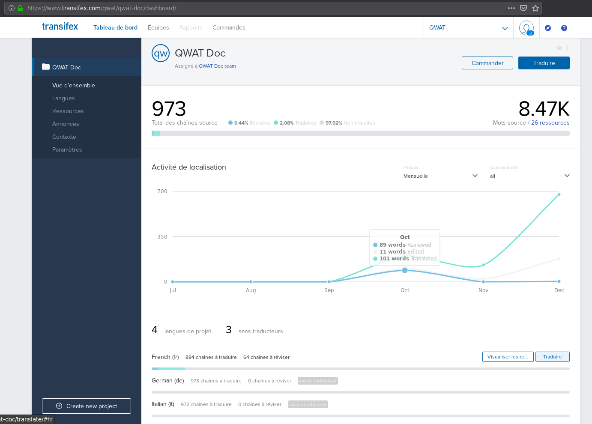

5. Contributor’s guide
How to contribute to QWAT and collaborate with developers.
This guide is dedicated to anyone willing to contribute to QWAT. From sending a data sample to giving advices on features, or contributing to documentation, you will find useful informations here.
If you want to go further, you can look at the Developer’s Guide
5.1. Prerequisites
You will need a GitHub account. Please create one here : https://github.com/join.
5.2. Discussing features
Bug reports, feature demand, feature specifications and all collaboration on QWAT takes place first in QWAT issues :
This is the starting place for all demands. If other modules are impacted (QGIS core, data model, plugins), then additional tickets in respective projects are created.
Read below advices on how to contribute.
5.2.1. I found a bug in QWAT, what do I do ?
If the bug you find is a QGIS issue, please search if it doesn’t exist upstream at https://issues.qgis.org/projects/qgis/issues/ and add one if needed
Create a new issue here : https://github.com/qwat/QWAT/issues. Reference any upstream issue there.
Be sure to include all relevant information to reproduce the bug : minimal steps to follow, sample data, QGIS version, options used…
Be clear and concise. Any screencast or screenshot will help a lot.
Tag your issue as „Bug“
Keep an eye on the following discussion to give additional informations if needed
5.2.2. I found a bug in the data model, what do I do ?
Open a new issue here as well : https://github.com/qwat/QWAT/issues
- If you are 100% sure that it is a data model bug :
tag your issue as „Data model“
open a new issue here : https://github.com/qwat/qwat-data-model/issues
reference this new issue in the QWAT issue originally created
If unsure, help developers to qualify the bug
5.2.3. I want a new feature in QWAT, what do I do ?
Open a new issue here : https://github.com/qwat/QWAT/issues
Describe carefully the feature with details, include images and mockups if needed
Tag the issue as „Enhancement“
Consider funding the development
5.2.4. I want to collaborate on feature specs, what do I do ?
Check the existing issues here
Add comments to the discussion
5.3. Data model changes
5.3.1. I need a change in the data model, what is the process ?
be sure that the required feature is really a change in the data model itself and not the application
open an issue on GitHub in the data model project (https://github.com/qwat/qwat-data-model/issues)
include in your issues a clear and concise explanation of the reasons for the change
allow some time for others to reply
participate in the discussion
do not hesitate to mention concerned people (like @vpicavet for example) to notify them of the discussion
when the discussion converges, a decision is taken by commiters to go for this modification or not
OSLANDIA, on behalf of the PSC, is the data model release manager and will have final word in case of unclear trend
5.3.2. My change demand has been considered valid. What is next ?
Two cases : you can write the change, or you want somedy else to do it.
5.3.3. I can write the patch myself, what do I do ?
Read the developer’s guide
Write the patch
send a pull request to the qwat-data-model repository
commiters will review and merge it
Note that a continuous integration tool will automatically run functional tests and conformity tests on your pull request. Please note that a patch must be done in two parts: the core model files used for initialization, and the delta files used to migrate existing database versions. A patch must lead to the exactly the same state between initialization and migration process to be valid.
5.3.4. I want someone to write the modifications, what is the process ?
a specification is written as new comment to the issue (by you or someone else)
impacts on other parts of QWAT are studied, and corresponding issues are opened (on qwat/QWAT project namely)
a required funding estimation is done
funding is found
development takes place
a PR is created on the qwat-data-model repository
commiters will review and merge it
5.3.5. I want to add some custom fields/table to the model, how do I do ?
5.4. Documentation
5.4.1. How to contribute to the documentation
Documentation must be written in English only, translations are done in Transifex, see below. The text format is rst (ReStructuredText), a guide to this format is available on the page A ReStructuredText Primer.
Documentation must be clear, simple and up to date. In particular, developers are asked to add documentation of their functionalities to each modification based on the principle of „You write the code, you write the doc“.
You will find a guide to writing documentation on the Write the docs site and more specifically on the Documentation Principles page
5.4.2. Translating QWAT
QWAT uses Transiflex, an open source translation platform, to power the translation of QWAT into different languages. All translations are hosted at Transifex.com, which provides a web application allowing translators to write, submit and manage their translations.
5.4.2.1. Getting started with Transifex
Contributors who want to help translate QWAT find translation projects on Transifex.
5.4.2.1.1. Sign up for an account
Go to https://www.transifex.com/signup/ and fill out the form to create a free Transifex account, if you do not have one already.
5.4.2.1.2. Join a translation team
After you set up your account, visit the QWAT project to become a translator for a language.
The project page lists languages that have translation projects. If your target language is listed, click on the name of the language to go to the language’s page. An example of choosing the French translation project follows.
5.4.2.1.3. Translating with Transifex
After you become a member of the translation team, you can select any of the resources in the project to begin translating it.
For help documentation on Transifex, see the Transifex translators doc.
Each language page lists a set of distinct resources to translate.
5.4.2.1.4. General principle on the automatic creation of translated pages
Each time the documentation is modified, a „master“ version is translated by the continuous integration. Each time a „tags“ is created, a translation is made for the tagged version: this is the versioning.
The HTML pages are pushed to another branch named gh-pages of the repository, in the version sub-folder. This branch should not be modified directly.
They are accessible via the links http://qwat.github.io/docs/TAG/LANG/html/ where TAG is the name of the version and LANG is the language of the documentation.
Redirections are in place to avoid 404 github page errors:
http://qwat.github.io/docs/ -> http://qwat.github.io/docs/master/en/html
http://qwat.github.io/docs/TAG/ -> http://qwat.github.io/docs/TAG/en/html